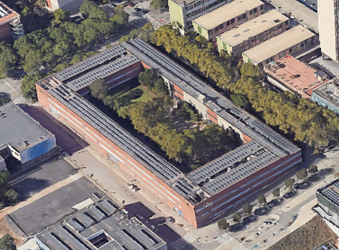
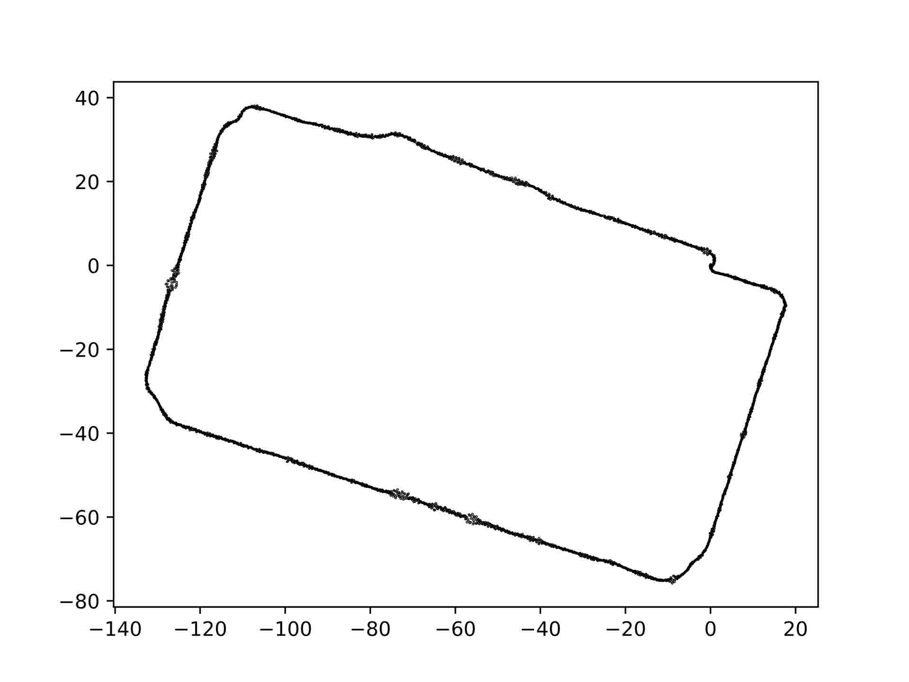

FME
Ground sensor box9 ROS2 bags
Contains only sensor box data (no drone).
| Bag | Image resolution | Size | Duration | Messages |
|---|---|---|---|---|
| 001 | 640×480 | 230.9 MiB | 10.2 s | 1,014 |
| 002 | 640×480 | 365.3 MiB | 16.7 s | 1,604 |
| 003 | 640×480 | 12.2 GiB | 384.0 s | 45,707 |
| 004 | 1280×720 | 20.3 GiB | 95.6 s | 43,410 |
| 005 | 1280×720 | 5.7 GiB | 68.1 s | 20,619 |
| 006 | 1280×720 | 1.1 GiB | 13.0 s | 4,330 |
| 007 | no camera images | 3.5 GiB | 87.2 s | 400,084 |
| 008 | 1280×720 | 30.9 GiB | 121.3 s | 541,534 |
| 009 | 1280×720 | 2.1 GiB | 25.6 s | 8,626 |
